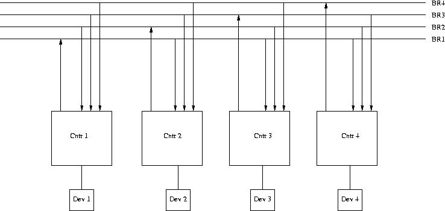
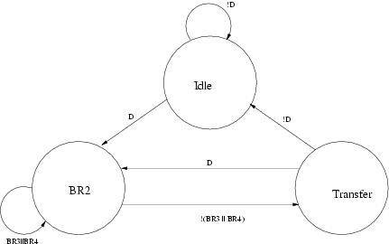

The state diagram for the FSM device controller can be found in the handouts section of the website under the notes for I/O. Note that in the notes, the transition from BGout to IDLE is based on the SACK signal. This is to illustrate the second race condition which is corrected by basing the transition on (NOT BGin).
The input and output signals of the controller are:
| Signal | Type | Function |
|---|---|---|
| DEV | Input | Asserted when the device needs to initiate a bus transaction |
| BGin | Input | Incoming bus grant signal, asserted by the priority arbitration unit |
| BBSYin | Input | Asserted by the current bus master. Negative edge indicates the end of a bus cycle. |
| MSYN | Input | Master-side handshaking signal that controls the bus transaction between the bus master and the slave |
| SSYN | Input | Slave-side handshaking signal that controls the bus transaction between the bus master and the slave |
| BRout | Output | Asserted to request the bus. Goes to the priority arbitration unit. |
| SACK | Output | Asserted by the device that has won the arbitration |
| BBSYout | Output | Same as BBSYin |
| BGout | Output | Asserted when the controller needs to pass the bus grant signal down the daisy chain. |
Two race conditions are:
This race condition is subtle. From the PAU side the PAU asserts BGj, which works its way down the daisy chain to all devices at BRj. Before SACK is asserted, a controller asserts BRk, where k is higher priority than j. PAU now asserts BGk, and you have two BG signals propagating, which will result in two controllers thinking they are the next bus master.
Solution: PAU latches BR signals when it sees NOT-BBSY, indicating it is okay to grant the bus again. NOT-SACK is also gated (after sufficient delay) with the BG signals, guaranteeing that a BG signal cannot be asserted until after PAU logic has taken effect. Any subsequent BR signal does not get latched and so can not affect the PAU logic.
Let's say device controller D1 is in BGout state. This means that some device D2 that is down the same daisy chain as D1 had requested and is granted the bus. Let's say the device of D1 asserts the DEV signal while D1 is in BGout state. D2 will eventually receive the BGin signal and transition to the SACK state. It will take some time for the SACK signal to travel to the priority arbitration unit. The SACK signal probably reaches D1 before it reaches the priority arbitration unit. Hence, when the SACK signal reaches D1 the BGin input of D1 is still being asserted. Therefore, upon receiving the SACK signal D1 will immediately transition to IDLE to BRout to SACK states. Hence, both D1 and D2 will be asserting the SACK signal which is not desirable. A simple solution that fixes this race condition is not transitioning to IDLE state if the BGin signal is still high.
The solution is shown below:
It is possible. Consider a case where device 3 and 4 just alternate the bus.
The solution is shown below.
a) Single processor system - using Horner's rule
(((((ax + b)x + c)x + d)x + e)x + f)x + g
Number of operations = 12 (6 multiplies & 6 adds)
Number of time-steps = 12
b) Using 4 processors: time steps = 5, operations = 15.
One way of doing this is:
| Step 1 | x * x | b * x | d * x | f * x |
| Step 2 | x2 * x2 | a * x2 | dx + e | bx + c |
| Step 3 | ax2 * x4 | (bx +c) * x4 | (dx + e) * x2 | fx + g |
| Step 4 | ax6 + bx5 + cx4 | dx3 + ex2 + fx + g | ||
| Step 5 | ax6 + bx5 + cx4 + dx3 + ex2 + fx + g |
An intuitive proof for why it can't be done in less than 5 time steps:
Lets assume it takes x time steps. In the xth time step, only one operation can be performed (either an add or a multiply) to get the final result. In the (x-1)th time step, at the most two operations can be performed, one each to get each of the operands for the operation in step x. In the (x-2)nd time step & other below, possibly 4 units of work can be found. If x = 4, then theres no way to compute all the operands such that only 3 operations are left to be performed after 2 time steps.
c) Speedup = T1/ Tp = 12/5 = 2.4